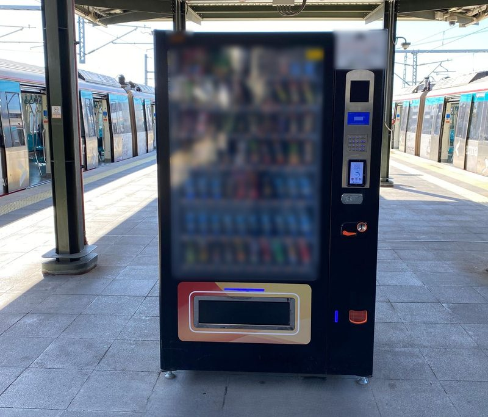
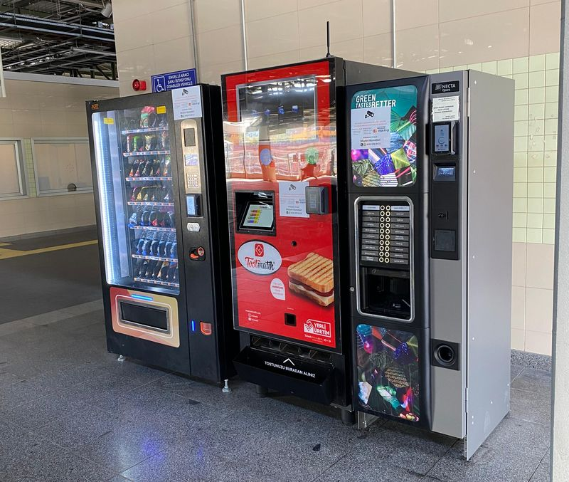
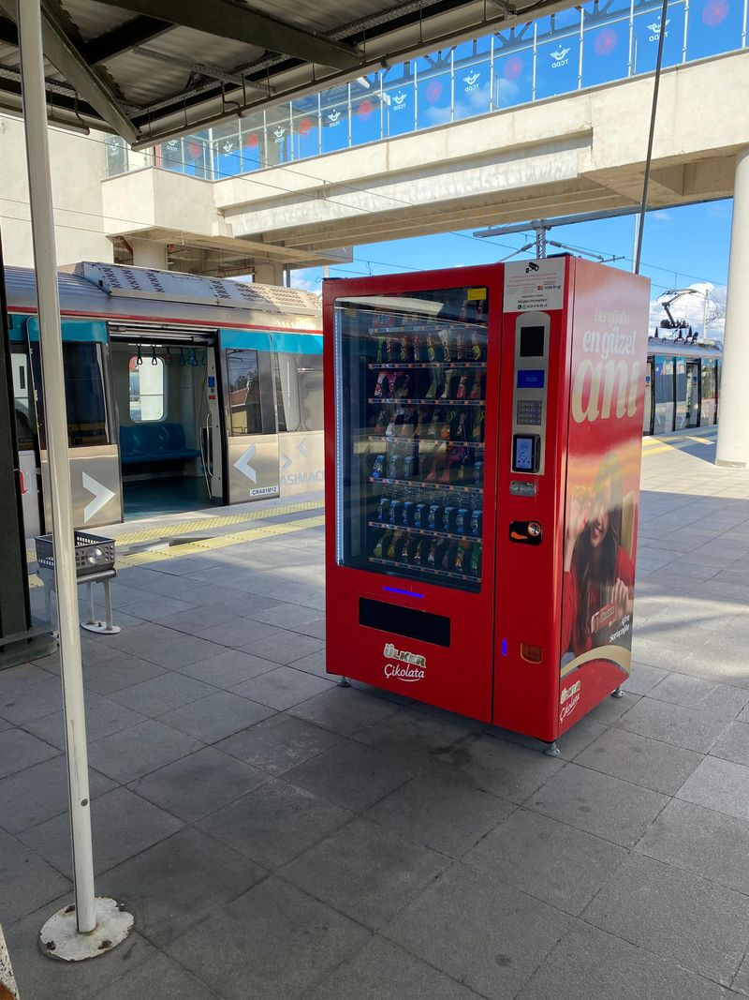
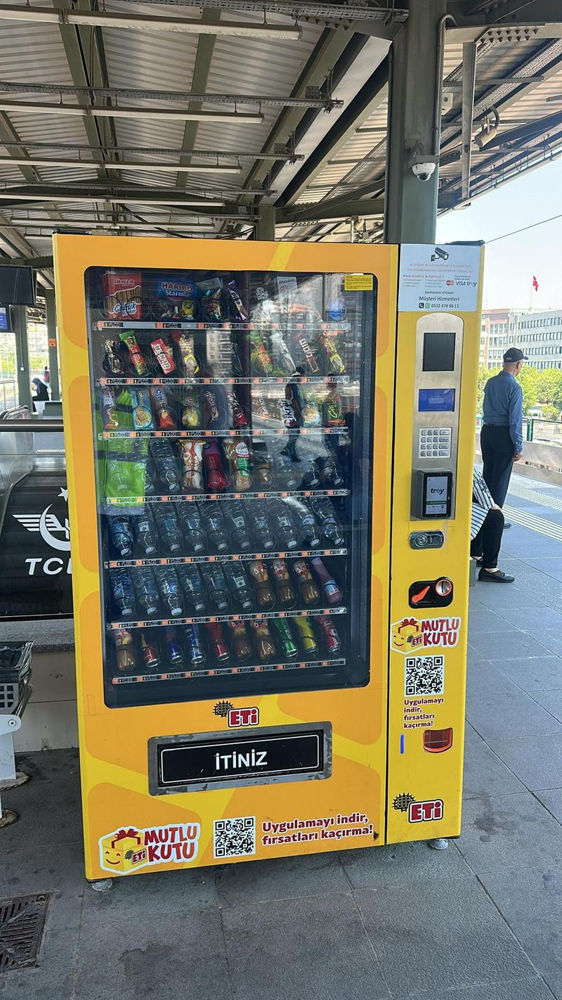
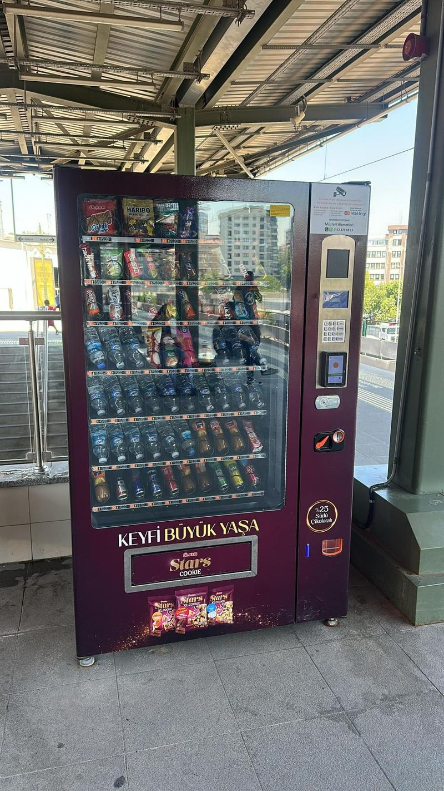

Otomat Yerleştirme
İş yeri, fabrika, okul, hastane ve toplu taşıma noktalarına uygun otomatı kuruyoruz.
Aykar Otomat; iş yerleri, fabrikalar, okullar ve istasyonlar için içecek ve atıştırmalık otomatı kurar. Dolum, bakım ve temizlik bizden. Marmaray'ın Halkalı–Gebze arasındaki 43 istasyonunda 129 otomatımızla hizmet veriyoruz.

Aykar Otomat olarak modern otomat sistemleriyle hızlı, kaliteli ve güvenilir hizmet sunuyoruz. Marmaray istasyonlarındaki makinelerimizle her gün yolculara taze ve çeşitli ürünler ulaştırıyoruz.
Otomatlarımızdan soğuk içecek, atıştırmalık, tost, çay ve kahveye kesintisiz ulaşabilirsiniz. Hijyen ve kalite standartlarımızla müşteri memnuniyetini her zaman ön planda tutuyoruz.
Otomatın yerini birlikte belirliyoruz; kurulumdan günlük dolumuna kadar tüm süreci biz yürütüyoruz.
İş yeri, fabrika, okul, hastane ve toplu taşıma noktalarına uygun otomatı kuruyoruz.
Soğuk içecek, atıştırmalık, tost ve sıcak içecek ürünlerini düzenli olarak yeniliyor, stoğu takip ediyoruz.
Periyodik bakım, temizlik ve arıza durumunda hızlı müdahale ile otomat hep çalışır durumda kalır.
Ürünlerin son kullanma tarihlerini kontrol ediyor, makineleri temiz ve düzenli tutuyoruz.
Otomat koymak istediğiniz yer için dört adımda süreç tamam.
Telefon ya da WhatsApp'tan yeri ve günlük kişi sayısını kısaca anlatın.
Alanı birlikte inceleyip uygun otomat tipine ve ürünlere karar verelim.
Otomatı getirip kuruyor, ilk dolumunu yapıp çalışır şekilde teslim ediyoruz.
Sonrasında dolum, temizlik ve bakımı düzenli olarak biz yapıyoruz.
Halkalı'dan Gebze'ye 43 istasyonun hepsinde, toplam 129 otomatımız var. Soğuk içecek, atıştırmalık, sıcak tost, çay ve kahve; nakit ya da kartla ödeme.
Bu isimde istasyon bulunamadı.
Bir istasyona dokunun, harita o istasyonu göstersin. Google Haritalar'da aç
Otomatlarımızla ilgili bir sorun yaşadıysanız ya da görmek istediğiniz bir ürün varsa bize yazın.
Hangi istasyon ve hangi otomat olduğunu yazarsanız daha hızlı dönüş yaparız.
Yakında: üyelik sistemi ve düzenli alışveriş yapanlara özel indirimler.






Küçükçekmece / İstanbul
[Açık adres]
Çalışma saatleri: [Hafta içi 00:00–00:00, Cumartesi 00:00–00:00]
Kısaca anlatın, en kısa sürede dönüş yapalım.